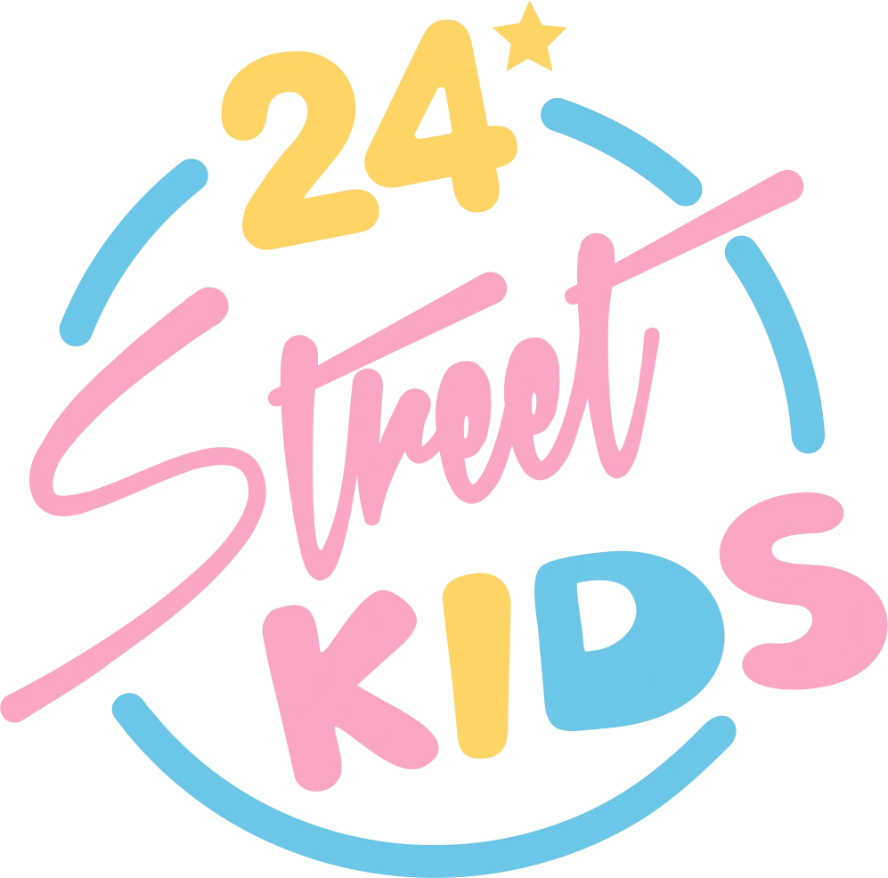

CASO 01 / 24 STREET · DIRECCIÓN DE ARTE Y DISEÑO APLICADO
24 STREET✳
MUCHO MÁS
QUE UN LUGAR.
Del sistema gráfico a su presencia en espacios, piezas comerciales, packaging y experiencias. Una selección de trabajos y registros reales de 24 Street.
↓EXPLORAR EL CASOESPACIOS · PACKAGING · KIDS · CAMPAÑAS
01 / ESTUDIO DE CASO
UNA MARCA.
MUCHOS PUNTOS DE CONTACTO.
El trabajo documenta cómo un lenguaje visual se adapta a distintos formatos sin perder reconocimiento: desde el local y la comunicación comercial hasta los objetos que llegan a las manos del público.
- Áreas mostradas
- Gráfica ambiental, packaging, comunicación visual y campañas.
- Material
- Piezas de diseño, aplicaciones visuales y registros fotográficos reales.
Las marcas, personajes y ambientaciones preexistentes se muestran en su contexto. Cada pieza distingue aplicación, registro y propuesta visual.
UNA MARCA
QUE SE RECONOCE.
El sistema visual se adapta al contraste del soporte: una versión monocromática y una expresión luminosa que conserva el carácter urbano de la marca.
ADAPTACIÓN TEMÁTICA
UNA IDENTIDAD.
OTRA ACTITUD.
Una interpretación temática que conserva los rasgos reconocibles de 24 Street.
LA MARCA
SE HABITA.
Fotografías de espacios de 24 Street. El foco de esta sección es la marca integrada a la arquitectura, los murales, el color y las superficies de comunicación.
Fotografías reales de espacios y ambientaciones. Las piezas se presentan como parte del desarrollo visual y la experiencia de marca, sin atribuir la autoría individual de cada elemento escenográfico.
DISEÑADO
PARA SER VISTO.
El universo visual sale de la pantalla y se convierte en un objeto reconocible. Baldes, piezas gráficas y presentaciones de producto con identidad propia.
SISTEMA DE PRODUCTO
UNA FAMILIA.
VARIOS FORMATOS.
Baldes, bowls y cajas llevan la identidad a la experiencia de compra. Cada formato conserva su proporción y se presenta completo.
UNA IDENTIDAD QUE CAMBIA DE REGISTRO
24 STREET
KIDS.
Una extensión visual dedicada al entretenimiento infantil, con identidad propia y packaging para diferentes experiencias y ediciones temáticas.

Los diseños temáticos contienen personajes y universos visuales de terceros. Se muestran como trabajos de aplicación gráfica y packaging, no como creación de esos personajes.
UNA IDENTIDAD.
VARIAS SEDES.
Tres sedes, distintas superficies de comunicación y un mismo desafío: que la marca siga siendo reconocible sin repetir exactamente la misma puesta en escena.
CENTRO / REGISTRO EN VIDEO
DONDE EMPEZÓ
LA HISTORIA.
La primera sucursal, en 24 de Septiembre y Junín, como punto de partida de una identidad que se extendió a otros espacios.
LA IDENTIDAD
SALE A LA CALLE.
Gráfica de gran formato para comunicar ofertas, productos y mensajes desde los espacios del local.
DEL ARCHIVO AL ESPACIO
GRÁFICA QUE
SE HACE VER.
Una composición de producto, color y tipografía pensada para comunicar desde el local.
Pieza de archivo. Las promociones no representan una oferta vigente.
CAMPAÑAS
CON PERSONALIDAD.
Un sistema visual capaz de incorporar experiencias temáticas, promociones y contenidos sin perder la identidad de 24 Street.
VIDEO · CAMPAÑAS ESPECIALES
EL DISEÑO
TAMBIÉN SE MUEVE.
Una muestra del trabajo audiovisual y la adaptación de la identidad a experiencias temporales. Extracto breve, sin audio, preparado para web.
CADA DETALLE
COMUNICA.
Carta digital y acceso por QR como parte de un mismo ecosistema visual. Una muestra breve de páginas permite apreciar el diseño sin convertir el caso en un catálogo interminable.
24 STREET / CASO DE ESTUDIO
UNA IDENTIDAD.
MÚLTIPLES EXPERIENCIAS.
Una selección editada de aplicaciones de identidad, espacios y comunicación de marca. El objetivo es mostrar el diseño funcionando en el mundo real.
VER TODOS LOS PROYECTOS SIGUIENTE CASO: QUÉ MILA, BOBO!